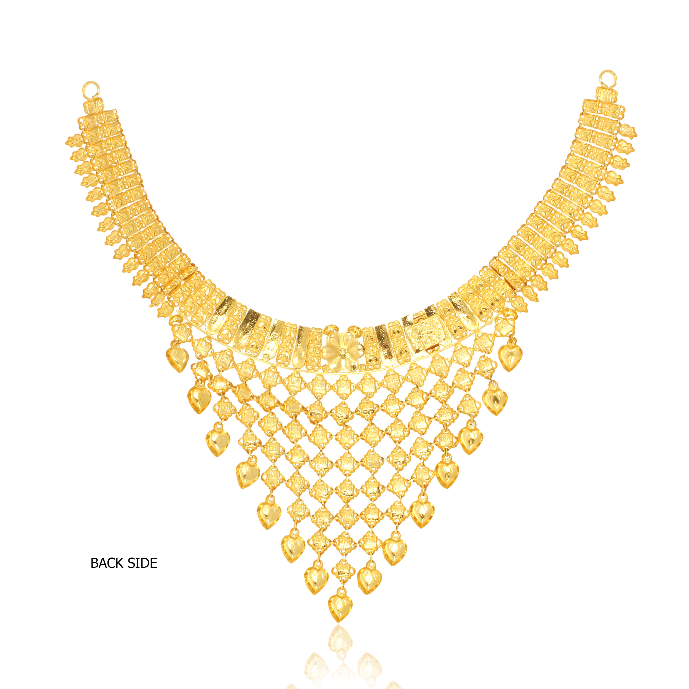

our team of design consultants guides you through each step of designing the perfect ring. Get expert advice and guidance on your diamond or gemstone choice and ring Design. free sketch design.Diamond jewelery-Diamond Jewelery Set-Diamond Jewelery Design-Diamond Bracelet Design-diamond Bracelet Gold Bracelet Sample-Gold Bracelet
Gold Cast Bar - 1 Kg (999.9). Gold Grain - 1000 Grams-(995.0)(999.9)-Purity Pure gold has 24 carats - that is, 24/24 parts by weignh of gold - and thus a fineness of 999.9% (999.9 thousand parts). Some mints and maints


Most natural diamonds have ages between 1 billion and 3.5 billion years. Most were formed at depths between 150 and 250 kilometres (93 and 155 mi) Natural Diamonds is the destination for all things natural diamonds. Get diamond style & engagement ring inspiration.


Necklaces, Bracelets, Earrings, Rings, Anklets. High-Quality Jewellery For Women - Personalised Jewellery Quality Guaranteed. Free Worldwide Shipping.


Meet timeless, twinkling drop earrings, gold hoop earrings, and more-made to mix, match, and inspire. From a simple, sparkly studs earring to stackable gold Earrings are one of the most timeless and versatile pieces of jewelry. They have been worn by women for centuries and have evolved into a must-have accessory


Discover our Range of Diamond Bracelets. Timeless Bespoke In-house and International Designs. Luxury Specialists. Bridal Jewellery. Specialty Diamonds. Exclusive Collections. Iconic Jewellery



Discover our Range of Diamond Bracelets. Timeless Bespoke In-house and International Designs. Luxury Specialists. Bridal Jewellery. Specialty Diamonds. Exclusive Collections. Iconic Jewellery

Some of the popular anklets for women available on Etsy include: anklets for women sterling silver, anklets for women boho, anklets for women beach, toe rings
Telegram : @voeun sophaktra